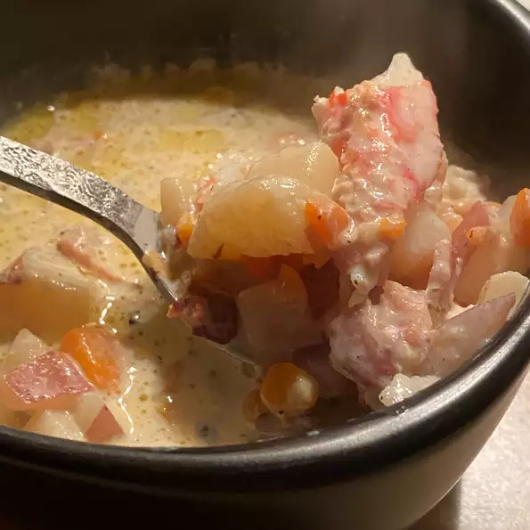

Cindy's Awesome Clam Chowder

Description
A wonderful clam chowder to serve with hot sourdough bread, or even better yet, in a sourdough bread bowl.
My whole family adores this recipe, I'm sure yours will too!
Ingredients
- ½ pound bacon, cut into 1/2 inch pieces
- 5 unpeeled potatoes, diced
- 2 carrots, diced
- salt and pepper to taste
- 2 (6.5 ounce) cans chopped clams with juice
- 2 (1.8 ounce) packages dry leek soup mix
- 1 quart half-and-half
Steps
-
Place the bacon in a large pot and cook over medium-high heat,
stirring occasionally, until crisped and browned, about 10 minutes.
Remove the bacon with a slotted spoon, leaving the drippings in the pot.
Set the bacon aside. Stir the potatoes and carrots into the bacon fat.
Season with salt and pepper, and cook for 5 minutes, stirring frequently.
-
Pour the juice from the clams into the pot, and add enough water to just cover the potatoes.
Bring to a boil, then reduce heat to medium-low, cover, and simmer until the potatoes are
just tender, 10 to 15 minutes.
-
Gently stir the leek soup mix into the potatoes until no lumps of soup remain.
Stir in the clams, reserved bacon, and half-and-half cream.
Cook and stir until the chowder returns to a simmer and thickens, about 10 minutes more.
back to home page
go to top